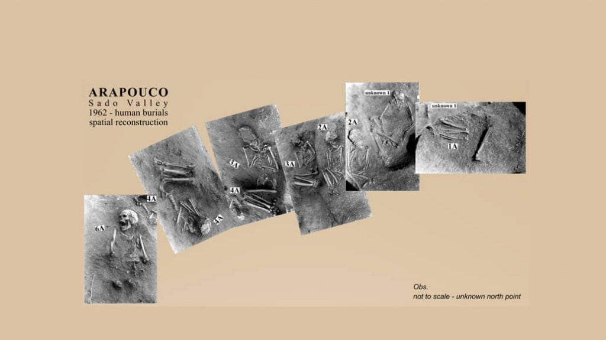
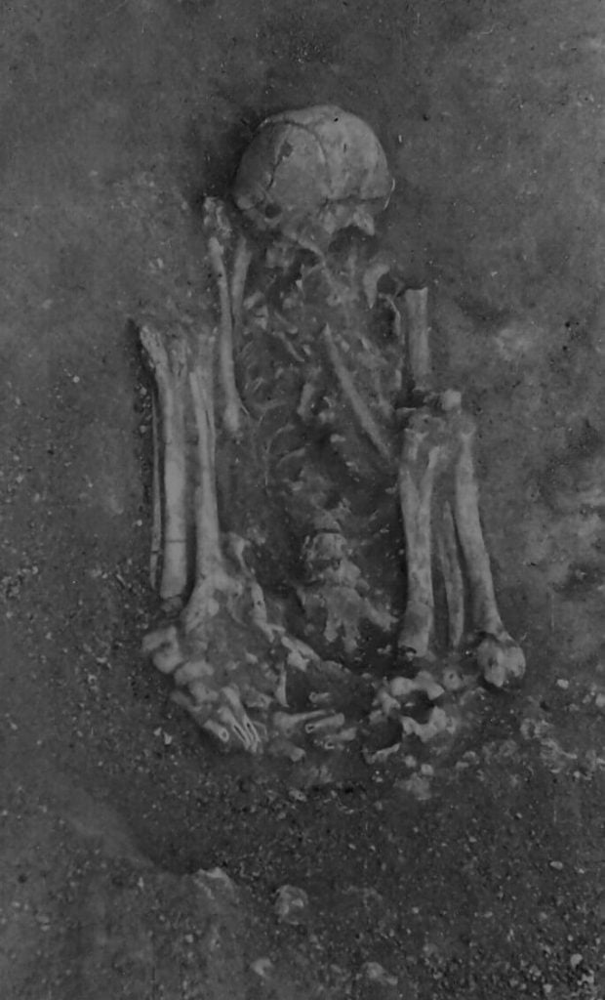

လွန်ခဲ့တဲ့ နှစ် ၆၀ ခန့်က ပေါ်တူဂီ နိုင်ငံ တောင်ပိုင်းက နှစ် ၈,၀၀၀ ခန့် သက်တမ်းရှိတဲ့ ရှေးဟောင်း သင်္ချိုင်းဟောင်း တစ်ခုကို ရှေးဟောင်း သုတေသီတွေ တူးဖော်စဉ်က တွေ့ရှိခဲ့ရတဲ့ ရုပ်ကြွင်းတွေကို ဓါတ်ပုံ ရိုက်ယူ ထားခဲ့ပါတယ်။ ဒါပေမယ့် ဒီ ဓါတ်ပုံ ဖလင်လိပ် တွေဟာ ပုံမဆေးပဲ သိုလှောင်ထားခဲ့ရာက မေ့လျှော့လို့ သွားခဲ့ကြပါတယ်။
လွန်ခဲ့တဲ့ နှစ်အနည်းငယ်က ရှေးဟောင်း သုတေသန ဌာန တစ်ခုရဲ့ သိုလှောင်ခန်း ထဲမှာ ဒီ ဓါတ်ပုံ ဖလင်လိပ်တွေကို ရှာဖွေ တွေ့ရှိ ခဲ့ကြပါတယ်။ ဒီ ဖလင်တွေကို ဆေးကူးပြီး ရလာတဲ့ ဓါတ်ပုံတွေကို ပညာရှင် တွေက အသေးစိတ် လေ့လာ စစ်ဆေးခဲ့ ကြပါတယ်။
၁၉၆၀ ခုနှစ်တွေ အတွင်းက ပေါ်တူဂီ နိုင်ငံတောင်ပိုင်း ဆာဒို ချိုင့်ဝှမ်း (Sado Valley in Southern Portage) မှာ ပြုလုပ်ခဲ့တဲ့ ဒီ ရှေးဟောင်း ဂူသင်္ချိုင်း တူးဖေါ်မှု အတွင်း ရုပ်ကြွင်း တဒါဇင် လောက်ကို တူးဖော် ရရှိ ခဲ့ကြပါတယ်။
အခု တွေ့ရှိတဲ့ ဓါတ်ပုံ အထောက်အထား တွေနဲ့ မြေပြင် ကွင်းဆင်း စစ်ဆေးချက် တွေအရ ဒီရုပ်ကြွင်းတွေ ထဲက အနည်းဆုံး ရုပ်ကြွင်း တစ်ခုကို မံမီ ပြုလုပ်ထားတယ် ဆိုတာကို တွေ့ရှိ ခဲ့ကြပါတယ်။ ပညာရှင် တွေကတော့ ဒီ ရုပ်ကြွင်းကို သေဆုံးတဲ့ နေရာကနေ မြှုပ်နံတဲ့ နေရာ အရောက် သယ်ယူပို့ဆောင် ရာမှာ အဆင်ပြေအောင် ဒီလိုမျိုး မံမီ အဖြစ် ပြုလုပ်ခဲ့ကြတယ်လို့ ယူဆကြ ပါတယ်။
သေဆုံးသွားတဲ့ ရုပ်ကြွင်းကို အခြောက်ခံပြီး မံမီ ပြုလုပ် ခြင်းကို ရှေး အီဂျစ် လူမျိုးတွေက လွန်ခဲ့တဲ့ နှစ် ၄,၅၀၀ ခန့်ကတဲက စတင် ပြုလုပ် ခဲ့ကြပါတယ်။
ဥရောပ တိုက်မှာလဲ မံမီ ပြုလုပ်ခြင်းကို ဘီစီ ၁၀၀၀ (လွန်ခဲ့တဲ့ နှစ် ၃၀၀၀) ခန့်ကတဲက ပြုလုပ်ခဲ့တယ် ဆိုတဲ့ အထောက်အထားတွေလဲ တွေ့ရှိ ထားခဲ့ပါတယ်။
ဒီ့ထက် စောတဲ့ မံမီ တွေကို တောင် အမေရိကတိုက် ချီလီ နိုင်ငံမှာ တွေ့ရှိ ထားခဲ့ ပါတယ်။ ဒါပေမယ့် အခု ပေါ်တူဂီ နိုင်ငံ တောင်ပိုင်းမှာ တွေ့ရှိရတဲ့ မံမီ ဟာ ချီလီ နိုင်ငံ အက်တာကာမာ သဲကန္တာရ ထဲမှာ ရှာတွေ့ခဲ့တဲ့ အစောဆုံးလို့ ဆိုတဲ့ မံမီထက် အနှစ် ၁၀၀၀ လောက် ပိုစောနေ တာကို တွေ့ရှိရပါတယ်။
သေဆုံးသွားတဲ့ ရုပ်ကြွင်း တစ်ခုကို မံမီဖြစ်အောင် အခြောက်ခံ ရတာဟာ အက်တာကာမာ သဲကန္တာရလို ခြောက်သွေ့တဲ့ အရပ်ဒေသမှာ သိပ်မခက်ခဲ လှပါဘူး။ ဒါပေမယ့် ဥရောပ တိုက်လို ဆွတ်စိုပြီး အေးတဲ့ ရာသီဥတု ရှိတဲ့ အရပ်ဒေသ မျိုးမှာတော့ မံမီ ဖြစ်သွားတဲ့ ရုပ်ကြွင်းတွေဟာ သိပ်ပြီး ကြာကြာ ခံလေ့ မရှိကြတာမို့ မံမီ ပြုလုပ်တဲ့ အထောက်အထား ရှာတွေဖို့က အတော်လေး ခက်ခဲ လှပါတယ်။
မဆေးရသေးတဲ့ဖလင်လိပ်တွေ
အခု မံမီနဲ့ ပါတ်သက်တဲ့ အထောက်အထား တွေကို ၂၀၀၁ ခုနှစ်က ကွယ်လွန် သွားခဲ့တဲ့ ပေါ်တူဂီ လူမျိုး ရှေးဟောင်း သုတေသန ပညာရှင် မန်နျူရယ်လ် ဖရင်ညာ (Manuel Farinha) စုဆောင်း ထားခဲ့တဲ့ ပစ္စည်း တွေ ထဲကနေ ရှာတွေ့ခဲ့တာ ဖြစ်ပါတယ်။သူဟာ ၁၉၆၀ ပြည့်နှစ်တွေ အတွင်း ပေါ်တူဂီ နိုင်ငံ ဆာဒို ချိုင့်ဝှမ်း က ရှေးဟောင်း သင်္ချိုင်း ကနေ တူးဖော်ရရှိ ခဲ့တဲ့ ရုပ်ကြွင်းတွေကို လေ့လာခဲ့တဲ့ သုတေသီ တစ်ဦး ဖြစ်ပါတယ်။ သူ့ရဲ့ ရုံခန်းမှာ သိမ်းဆည်းထားတဲ့ ပစ္စည်းတွေကို ရှာဖွေ ရာမှ ဒီ မဆေးရ သေးတဲ့ ဖလင်လိပ် တွေကို တွေ့ရှိ ခဲ့တာ ဖြစ်ပါတယ်။

ဒီ ဓါတ်ပုံတွေကို အသုံးပြုပြီး မူရင် သင်္ချိုင်း နေရာမှာ မြုပ်နှံခဲ့ ပုံကို ပြန်လည် ပုံဖော် ကြည့်ခဲ့ ကြပါတယ်။ ဒီအခါ ဒီ ရုပ်ကြွင်း တွေ အထဲက ရုပ်ကြွင်း တစ်ခုရဲ့ လက်တွေ ခြေတွေဟာ ပုံမှန် သဘာဝ အတိုင်း ရှိရမှာထက် ပိုပြီး ကွေးခေါက် နေတာကို တွေ့ကြရ ပါတယ်။ ပညာရပ် ဆိုင်ရာ စကားနဲ့ဆို “hyperflexed” အနေအထား ဖြစ်နေတာပါ။
ဒီအချက်ဟာ ဘာကို ပြနေလဲ ဆိုတော့ သေဆုံးသွားတဲ့ အခါ ကိုယ်ခန္ဓာကို ကိုယ်ကို ကွေးပြီး တင်းတင်းကျပ်ကျပ် စည်းနှောင် ထားတယ် ဆိုတာကို ညွှန်ပြ နေပါတယ်။
နောက်တစ်ခု သတိထားမိ တာကတော့ ဒီ ရုပ်ကြွင်းတွေရဲ့ အရိုးတွေဟာ မြှုပ်နှံပြီး နောက်မှာလဲ မူရင်း အနေအထား မပျက် ရှိနေတာကို တွေ့ကြရပါတယ်။ အထူးသဖြင့် ခြေချောင်း လက်ချောင်း တွေက အရိုး သေးသေး လေးတွေဟာ မူလ အနေအထား မပျက် ရှိနေတာပါ။ ဒီ အရိုးတွေဟာ ပုံမှန်ဆို မြှုပ်နှံပြီး သိပ်မကြာမီ ပုပ်သိုးဆွေးမြေ့ပြီး ကြွေကျ သွားကြတာပါ။
မြှုပ်နှံထားတဲ့ ရုပ်ကြွင်း ပုပ်သိုး ဆွေးမြေ့ သွားတဲ့ အခါမှာ ဒီပုပ်သိုးသွားတဲ့ အသားတွေ နေရာကို ဘေးပတ်လည်က မြေကြီးတွေ အစားထိုး ဝင်ရောက် လာပါတယ်။ ဒါပေမယ့် ဒီ ရုပ်ကြွင်းတွေ မြှုပ်နှံထားတဲ့ နေရာ ပတ်ခြာလည်က မြေကြီးတွေကတော့ ဒီလို အနေအထား ပျက်ယွင်းတဲ့ လက္ခဏာ မတွေ့ရ ပါဘူး။ ဒါက ဘာကို ညွှန်ပြနေလဲ ဆိုတော့ ဒီ ရုပ်ကြွင်းတွေဟာ တော်တော်နဲ့ ပုပ်သိုးသွားခြင်း မရှိခဲ့ဘူး ဆိုတာပဲ ဖြစ်ပါတယ်။
ဒီအချက်တွေကို ပေါင်းစပ်ပြီး ကောက်ချက်ဆွဲလိုက်တဲ့ အခါကျတော့ ဒီ ရုပ်ကြွင်းတွေဟာ အသက် သေဆုံးပြီးတဲ့ အခါမှာ အခြောက်ခံပြီး မံမီ ပြုလုပ် ထားတာ ဖြစ်တယ် ဆိုတာကို ညွှန်ပြနေ ကြပါတယ်။ ဒီ ရုပ်ကြွင်း တွေကို ကြိုးတွေ အဝတ်တွေနဲ့ တုပ်နှောင်ပြီး အခြောက်ခံ ရှုံ့တွ သွားအောင် ပြလုပ်ခဲ့တာလို့ ယူဆရ ပါတယ်။

ဒီ လေ့လာ ချက်တွေအရ အခု ရုပ်ကြွင်း တွေကို သေဆုံး သွားပြီးနောက် အဝတ်တွေနဲ့ တုပ်နှောင်ပြီး လေကောင်းကောင်း ရတဲ့ ခပ်မြင့်မြင့် တစ်နေရာရာမှာ တင်ထားခဲ့တယ်လို့ ယူဆရပါတယ်။ ဒီနည်းအားဖြင့် ခြောက်သွေ့မှုကို လျင်မြန်စေသလို ကိုယ်ခန္ဓာက ထွက်တဲ့ အရည်တွေကလဲ အောက်ကို စီးကျသွားတဲ့ အတွက် ရုပ်ကြွင်းရဲ့ ပုပ်ပွ ပျက်စီးမှုကို တားဆီးပေး နိုင်ပါတယ်။
နောက်ပြီး ခြောက်သွေ့တာ ပိုမြန်အောင်လို့ မီးမျှင်းမျှင်းနဲ့ ကျပ်တိုက် ခဲ့တယ်လို့လဲ ယူဆရပါတယ်။
ဒီ နေရာမှာ မြှုပ်နှံထားတဲ့ အခြား ရုပ်ကြွင်း တွေမှာလဲ အလားတူ မံမီ ပြုလုပ်တဲ့ လက္ခဏာ အချို့ တွေ့ရှိရတယ်လို့ ဆိုပါတယ်။ ဒါပေမယ့် ကျန်တဲ့ ရုပ်ကြွင်းတွေမှာ တွေ့ရတဲ့ အထောက်အထား တွေကတော့ သိပ်ပြီး ပြည့်စုံမှု မရှိဘူးလို့ သိရပါတယ်။
အခုလို မံမီ ပြုလုပ်ခြင်းဟာ ဘာသာရေး အရ ပြုလုပ်တာထက် အခြား အရပ်ဒေသမှာ သေဆုံးတဲ့ သူတွေကို ဒီ ဆာဒို ချိုင့်ဝှမ်းမှာ မြှုပ်နှံဖို့ သယ်ဆောင်လာတဲ့ အခါ သယ်ယူပို့ဆောင်ရတာ အဆင်ပြေ အောင်လို့ မံမီ အဖြစ် ပြုလုပ်ခဲ့ခြင်း ဖြစ်နိုင်တယ်လို့ ပညာရှင် တွေက သုံးသပ် ကြပါတယ်။
အခု မံမီ တွေဟာ လွန်ခဲ့တဲ့ နှစ် ၈,၀၀၀ ခန့်ကမို့ သက်တမ်း အရင့်ဆုံး မံမီတွေလို့ ပြောလို့ရပေမယ့် ဒီ့ထက် သက်တမ်းရင့်တဲ့ မံမီတွေ မကြာမီ တွေ့ရှိလိမ့်မယ်လို့ ပညာရှင် တွေက ယုံကြည် ကြပါတယ်။
လက်ရှိမှာလဲ အစ္စရေး နိုင်ငံ အယ်လ်ဝဒ် နဲ့ အိန် မာလာဟာ (El Wad and Ain Mallaha in Israel) ဒေသတွေမှာ နှစ် ၁၀,၀၀၀ သက်တမ်းရှိနိုင်တယ်လို့ ယူဆရတဲ့ မံမီတွေ ရှာတွေ့ထားပါတယ်။ နောက်ပြီး ဘီလာရုစ်မှာ လဲ နှစ် ၃၀,၀၀၀ အလွန်ခန့်က မံမီ ပြုလုပ်တဲ့ လက္ခဏာ တစ်ချို့ ရှာဖွေ တွေ့ရှိ ထားကြပါ သေးတယ်။
Reference: World’s oldest mummy found in Portugal | Live Science